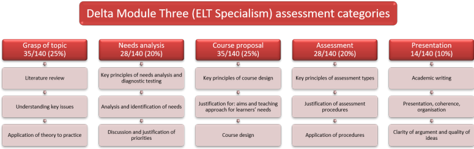
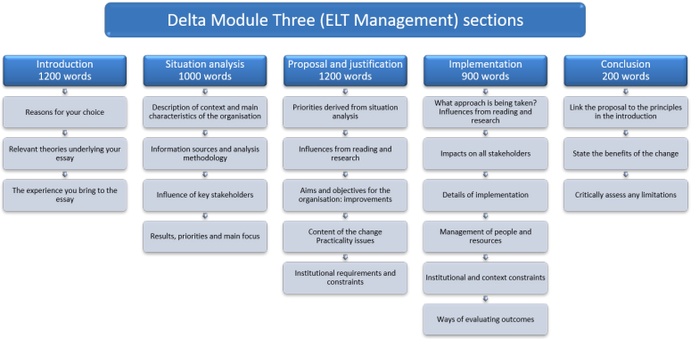
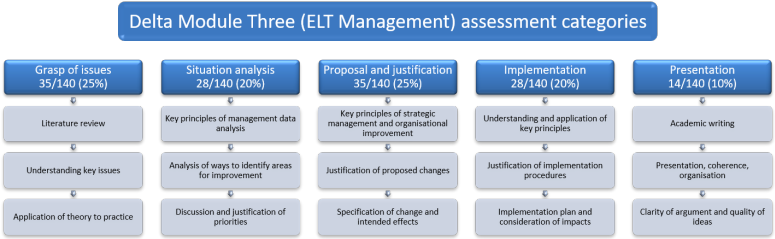

Delta Module Three: an overview and self-study course plan

This guide is mostly intended for people who want to enter for Module Three independently and do not wish, cannot afford, do not feel the need or are unable to take a taught course. It will, however, be of some utility to people taking or intending to take a taught course.
You are probably aware that there are two options for Module Three:
- Extending Practice and ELT Specialism which
is designed to develop your mastery of:
- your specialist area
so you will be the go-to person wherever you work - conducting needs analyses
so you can always keep up with what your learners need - curriculum and syllabus design
so you are well placed to take on an academic management role - types of syllabus
so you know what the options are - course design and evaluation
so you know how to design a course which will benefit your learners and be able to assess whether it did - assessment of learners
so you know how to test, evaluate and plan for your learners' progress
- your specialist area
- English Language Teaching Management which
is designed to develop your mastery of:
- your chosen management area in general
so you know how to talk about it, write about it and access the literature - conducting a situation analysis
so you know in detail where an institution or business current is - designing change
so you carry people with you towards definable and explicit objectives - implementing change
so you can do this smoothly and effectively and assess success (or otherwise) dispassionately
- your chosen management area in general
In brief, then, the aim of your assignment is to make yourself something of an expert on whichever option you are going for.
 |
English language teaching specialism |
If you choose the ELT Specialism option, your choice is limited to:
- Business English (BE)
- Teaching young learners/young adults (specified age group required within a 5-year range e.g. 8–13, 14–19) (YL)
- English for Specific Purposes (ESP)
- English for Academic Purposes (EAP)
- Teaching examination classes (EX)
- Teaching one-to-one (1to1)
- ESOL learners with literacy needs (ESOLLIT)
- CLIL/Embedded ESOL (teaching English through subject/work‑based learning or Content and Language Integrated Learning) (CLIL)
- Teaching monolingual classes (MON)
- Teaching multilingual classes (MUL)
- Teaching in an English-speaking environment (ESE)
- Teaching in a non-English-speaking environment (NESE)
- Teaching learners online/through distance/blended learning (DL)
- Teaching English to learners with special requirements, e.g. visual/hearing impairment, dyslexia, ASD (SR)
- Language development for teachers (LDT)
- Language support (e.g. on mainstream teaching programmes, specialist skills support, such as supporting writing needs) (LS).
These are large areas in themselves so within your choice, you will
need to narrow the scope to something manageable. For example,
within Teaching Examination Classes, you should focus on a particular
examination and designing a course to prepare people for it.
Within English for Specific Purposes, of course, the range of possible
specialisms is very wide.
For more, follow the link to Topic choice from the menu on the left.
 |
English language teaching management |
If you choose this option, your choices are limited to the following broad areas:
- Academic management
- Human resource management (HRM)
- Customer service
- Marketing
These are large areas in themselves so within your choice, you will
need to narrow the scope to something manageable.
For example,
within Academic management, you could focus on introducing a new course,
introducing new technologies and/or course materials or varying the
content of a current course or courses.
Within Human resource management, you could focus on teacher development
programmes, raising the teaching teams' skills and qualifications or on
current employment practices to conform to regulations and laws or on
recruitment and retention strategies. Be aware that you do not
necessarily need to focus on teaching staff alone.
Within Customer service, you could investigate ways to enhance the
commitment and motivation of learners or creating a better fit between
the courses you offer and the demands of sponsors and other
stakeholders.
Within Marketing you could look at ways of investigating how your
organisation's target market may be changing and what responses you need
to implement or consider a range of marketing tools that the
organisation either does not use or uses inefficiently or ineffectively.
For more, follow the link to Topic choice from the menu on the left.
Global issues |
Some issues are generic and common to both options for Module Three
so we'll handle those here because it doesn't matter which option
you select. Later, we'll take each option in turn and explain, briefly,
what is required of you and give you links to more detailed guides
to each section of the essay.
First, though, a bit more overview of both options. The
following is extracted from the Delta Handbook insofar as the author
appears to want to be understood.
Contents |
Where the handbook is clear, the following are the regulations.
- The product of your work is an essay of between 4000 and
4500 words, not including the contents page, the bibliography
and any appendices.
The essay must be written in clear, accurate English and you will gain 10% of the total marks for:- writing in a suitably academic tone and using suitable hedging and referencing techniques
- presenting a properly organised, coherent piece of work which does not impose a strain on the reader
- arguing clearly and presenting high-quality, thought-through ideas
- You may not exceed the word count. If you do, you will be penalised and if you do by more than 100 words, the essay will not be assessed. The word count includes text embedded in any diagrams and charts, incidentally (although the Handbook is silent on this). You must state the word count on the essay and you should say which word-processing package you used as a counter.
- Both types of essay are marked according to clear(ish), section-by-section criteria
- Background:
- you need to refer to an extensive range of reading
resources
See instructions about the bibliography, below - you are expected to do appropriate research
And the bibliography along with in-text referencing will demonstrate this.
- you need to refer to an extensive range of reading
resources
Submission and presentation |
- You must present your assignment electronically in no more
than two files:
- the main body of the essay including the bibliography
- appendices
- Margins on both documents should be set to 2.5 centimetres
- The title page must include:
- the centre details (name and number)
- your details (candidate number and full name)
- type of assignment (ELT Specialism or ELT Management)
- topic (i.e., a title which clearly identifies what the essay is about)
- the word count (and the name and version of the program you used to count)
- The main text must:
- include a footer with your name and the assignment title
- include a contents page immediately after the title page (Word will do this for you if you ask nicely and have been consistent with the style for headings and subheadings)
- not include footnotes
- include a page number either in the footer or in a header (preferably as Page x of n)
- use consistent headings and subheadings. Settle on a format and use it throughout (see the Delta Style Guide for more)
- be submitted as a Microsoft Word document with a file
extension of .doc or .docx. No other format is
acceptable. If you do not have access to Microsoft
Word, you can use a free processor such as Apache OpenOffice
which you can download from
this
link. If you write your assignment in a program
like this, you need to use the ‘Save As’ option and save the
text as a .docx document. Do not submit a .odt file
because that will not be accepted.
(The Handbook is wilfully unclear on this, stating, either Microsoft Word of Adobe PDF format, and then stating that the main body must be in Word format. We can only take that to mean that the appendices may be presented either as Word or PDF files. It would be helpful if those who demand clarity from candidates could manage a little themselves.) - include the bibliography (at the end, before any appendices)
- be named as follows:
- for the ELT Specialism: centre number_candidate
number_Delta3_specialism code_mmyy
For example: 99999_017_Delta3_EAP_0622
Translated, that is candidate 017 from centre 99999, submitting a Module Three assignment on English for Academic Purposes for the June 2022 session. - for the ELT Management specialism: centre
number_candidate number_Delta3_ELTM_mmyy
For example: 99999_017_Delta3_ELTM_0622
Translated, that is candidate 017 from centre 99999, submitting a Module Three assignment for the Management Specialism for the June 2022 session.
- for the ELT Specialism: centre number_candidate
number_Delta3_specialism code_mmyy
- Appendices may be separately submitted as either a Word file
or a PDF document (presumably) and named as:
centre number_candidate number_Delta3_appendices_mmyy
for either type of essay.
For example: 99999_017_Delta3_appendices_0622 - File sizes must not exceed 10MB (the Handbook is characteristically unclear but this figure applies to each file, not the combined size)
Even with the help provided here and your own best efforts, it is
always possible that you won't pass Module Three (although a pass
rate of over 75% is reassuring).
If you don't pass, the regulations are that you can re-submit an
amended essay, responding to the reasons the first one did not pass, once only. You must do
so within one year of the original
submission.
For example, if you are referred in June you can resubmit in
December or the following June. If you are referred in
December, you can resubmit in June or December next year.
If the resubmission still doesn't pass or you miss the deadline, you
need to start again and submit a new assignment.
Planning your own course |
The following is mostly for those who want to enter for Module
Three independently and will not be paying for a course.
There are plenty of paid-for Module Three courses, mostly delivered
online, and run by a number of centres.
If you do opt for a taught course, bear in mind that there is no
oversight from Cambridge concerning the staffing or content of such
courses. Anyone, anywhere can set up and run a Delta Module
Three course.
You will, therefore, be well advised to check carefully that the
centre has qualified tutors, knows something about your specialism
and is honourable before handing over your money. For more,
see the guide to
considering Delta.
If you decide to enter independently, you need to construct a personal work plan and do your own research. Here's some help.
Before you begin at all, you are advised to follow these guides on the site:
| The Delta Style Guide | which covers the mechanics of writing at this level including issues of formality, stereotyping, referencing conventions, avoiding plagiarism, using Latinisms, hedging, using reporting verbs, common syntax error, commonly misused words, jargon, structure and presentation. |
| Hedging and modality in academic writing | which covers a good deal more in terms of making sure you do not sound too sure of yourself and assertive but are tentative in your conclusions and suitably modest in your suggestions. |
| Reporting verbs in academic writing | which is concerned with selecting the appropriate verb to use when citing the works of other people rather than always using Smith says ..., Jones states ... etc. |
 |
ELT Specialism: the five-part Structure |
Module Three ELT Specialism essays have 5 parts and are assessed under 5 criteria. It looks like this:

 |
ELT specialism: assessment |

 |
ELT specialism: a study plan |
Your task is to plan each section independently and apply the assessment criteria to what you are writing as you go along.
Here's an idea of how to do that, set out as a course timetable
for you. You will, naturally, have to amend and adapt to suit
your circumstances. The left-hand column is deliberately
non-specific. Your time is your time.
The Check questions are taken from the Cambridge Handbook (sometimes
slightly abbreviated. See the Handbook for the full text.
If, when you read through what you have written, all the questions
are adequately answered, you are on the right track.
| Date | Section | Find | Read and take notes | Check on this site | Write | Check questions |
| 1 | Introduction | First three key references in the Reading Listfor my specialism | Three sources | The structure of Module Three | Reasons for my choice of specialism. | Why did you choose this
specialism? What theories and principles in the academic and professional literature have you found relevant, useful or challenging? What ideas from observation and experience have you drawn on? What have you found out from your research which is important for the design of your course? |
| 2 | Introduction | Three more key references in the reading list | Three more sources | Writing the introduction | Set out the key theories in relation to my ideas for a course. | |
| 3 | Needs analysis | Three key sources on needs analysis from the general reading list | On how these apply to my learners | Conducting needs analyses | Main group characteristics: ages educational and language level nationality and 1st languages learning preferences motivation employment |
Who is your specialist
group? What are their main characteristics? How did you identify the needs of your specialist group? Why did you select these methods? What form of diagnostic testing did you use and why? What were the results of the diagnostic test(s)? How did you use these in clarifying the learners’ needs and identifying language areas requiring attention? What aspects did you focus on and why? What priorities have you identified from the above? |
| 4 | Needs analysis | Good diagnostic tests | Key resources on testing | Needs analysis for Module Three | Methodology of my needs analysis. | |
| 5 | Needs analysis | Two texts on testing | Test types: advantages and disadvantages | Testing and assessment | Outcomes of the tests: summary in main text plus appendix. | |
| 6 | Needs analysis | Testing for Module Three | The results and implications. Justification for the priorities set out. |
|||
| 7 | Course proposal | Two texts on Syllabus and Course design | These texts and look for relevance to my course. | Types of syllabusWriting the course proposal | Identify key influences: Theories (from the introduction). Outcomes of needs analysis and diagnostic tests. |
In what ways is your
proposed course based on or influenced by ideas and
information from Parts 1 and 2 and your reading of relevant
literature? What are the learning aims and objectives you hope to achieve? What is the content of the proposed course? How is content organised? What approach to teaching will be used? What materials will be used? If you propose using published materials, how do these match the aims of the course? What institutional requirements or other constraints have you taken into account? |
| 8 | Course proposal | Materials to use | Guide to materials evaluation | Activity typesTask types | Aims and objectives of the course. | |
| 9 | Course proposal | Course design text | What is methodology? | Communicative Language TeachingSecond Language Acquisition Theories | Summary of course content in main
text. Detail and timetable in appendix. |
|
| 10 | Course proposal | Methodology texts | Methodology refined | Unlocking learning | Teaching approaches. Materials. Constraints. |
|
| 11 | Assessment | Texts on course assessment | Testing for Module Three(again) | Conducting on-going assessment. | How will you monitor
learning progress? How will you assess learning outcomes? What are the assessment principles outlined in the testing literature which will be applied to the assessments? How have these principles influenced your choice of assessments? In what ways, if any, are your choices of assessments constrained? How fit for purpose are the assessments in relation to your learner group and the proposed course? What constraints and opportunities affect the proposed assessment procedures? How will the course be evaluated for future use? |
|
| 12 | Assessment | Testing and assessment(again) | End of course assessment of progress. | |||
| 13 | Assessment | Evaluation of assessment methods. | ||||
| 14 | Conclusion | Before you submit:check list | How the proposal matched the
principles I worked from. List the benefits of the course. Critically evaluate success. |
How has your course proposal
applied the principles you discussed in Part 1? What do you expect to be the benefits for the learners of your course proposal? What do you consider to be some of the limitations of your proposal? |
 |
ELT Management: five-part Structure |
Module Three Management essays also have 5 parts and are assessed under similar criteria:

 |
ELT management: assessment |

Your task is to plan each section independently and apply the assessment criteria to what you are writing as you go along.
Here's an idea of how to do that, set out as a course timetable
for you. You will, naturally, have to amend and adapt to suit
your circumstances. The left-hand column is deliberately
non-specific. Your time is your time.
The Check questions are taken from the Cambridge Handbook (sometimes
slightly abbreviated. See the Handbook for the full text.
If, when you read through what you have written, all the questions
are adequately answered, you are on the right track.
 |
ELT management: a study plan |
| Date | Section | Find | Read and take notes | Check on this site | Write | Check questions |
| 1 | Introduction | The Management Reading list | The three essential texts | Choosing the topic | Reasons for my choice of target change. | Why did you choose the
ELTM option? Why did you choose this particular specialism? What theories and principles in the academic and professional ELT management literature have you found relevant, useful or challenging? What ideas from observation and experience of LTOs (Language Teaching Organisations) have you drawn on? |
| 2 | Introduction | Three more specific references in the reading list | Three more sources | Writing the introduction | Set out the key theories in relation to my ideas. | |
| 3 | Situation analysis | Three key sources on situation analysis from the reading list and the web | On how these apply to my LTO | Doing a Situation Analysis | Main LTO characteristics: type of language teaching operation size purpose local/national context. Describe the data sources and comment on their reliability. |
What is your
educational context ? What are the main characteristics of the LTO? How was the current situation analysed? What is the source of information? Why were these methods selected? Who are the key stakeholders and what influence do they have? What were the results of the analysis of data? How did you use these results to clarify the focus of your proposal? |
| 4 | Situation analysis | Examples of SA from the web (SWOT analyses etc.) | Key resources on SA | Methodology of my Situation Analysis. SWOT / 5C etc. |
||
| 5 | Proposal and justification | Two texts on strategic management | These texts and look for relevance to my proposal. | Writing the proposal | Identify key influences: Theories (from the introduction). Outcomes of situation analysis. |
What priorities have
you identified from the above situation analysis for
improving the current situation in your educational context
(LTO)? In what ways is your proposed change based on, or influenced by, your reading of relevant literature related to strategic management and organisational improvement? What are the institutional and educational aims and objectives you hope to achieve? How will the proposal improve the current situation in your LTO? What is the content of the proposed change? What are the expected outcomes? How will the proposal work in practice? What institutional requirements or other constraints have you taken into account? |
| 6 | Proposal and justification | Texts on managing change | Set out the proposal step by step with a justification linked to theories for each part. | |||
| 7 | Implementation | Texts on managing change | Make notes on relevance to this proposal. | Implementation | The key principles of change implementation in management theory. | What approach to
implementation will be used and why? How has your reading of change management, decision-making and/or project management influenced your choice of approach? What will be the impact of the proposed change on different stakeholders, internal and external? How exactly do you propose to implement your proposed change? How will people and resources be managed during the change process? In what ways, if any, are your choices of implementation constrained institutionally and contextually? How will you evaluate the outcomes of the implementation? |
| 8 | Implementation | The steps in the implementation process linked to theories of managing change. | ||||
| 9 | Implementation | Consideration of impacts on stakeholders. | ||||
| 10 | Implementation | Constraints. | ||||
| 11 | Implementation | Ideas for surveying views of stakeholders | The survey methodology. Summary here, details in the appendix. Evaluation of outcomes: summary here, details in the appendix. |
|||
| 12 | Conclusion | Before you submit:check list | Refer to the introduction and to
the principles I set out to follow. What benefits will the change have? What are the limitations of the proposal? |
How has your proposal applied the principles you discussed
in Part 1? What do you expect to be the benefits of your proposal for the LTO? What do you consider to be some of the limitations of your proposal? |
Good luck with the module.
Use the index on the left to select the areas one by one and then do
your research for your topic.